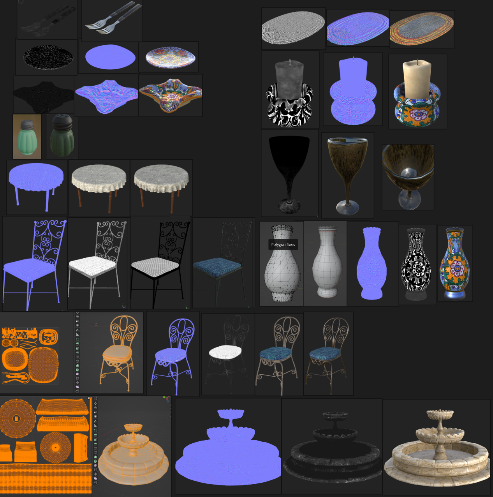

Environment Tech Art Sample
Assets and effects in San Miguel
This artwork were created for The Forge custom engine demo, as I worked as contract technical artist.
The original San Miguel asset contains two versions with different polygon amount.
However, the high poly version is too performance demanding for our mobile target platform,
while the low poly version lacks many details to demonstrate the rendering aesthetics.
My job is finding a sweet spot between the poly count and details.

Duration
07/2025 - 10/2025
Skill
Hard surface modeling (topology, normal baking)
PBR material workflow
Particle effects
As the first technical artist in the team, I worked with several graphics programmers and software engineers, to establish and document the asset production workflow, customized to The Forge PBR pipeline.
To meet specific requirements such as texture color space, I leveraged several tools and took some unconventional approaches to get the job done.
At the same time, I’ve been multitasking creating particle effects using our in-house editor.
I communicated clearly with feature requests and maintained a rapid iterative feedback loop on feature updates, with several teammates across multiple time zones.
I’m so happy that my work on the aesthetic has made the demo much more appealing, and appreciated by all my colleagues.
I also contributed my effort in making these particle effects using The Forge Remote Editor particle system.
To keep a smooth feedback loop, I developed a living doc involving everyone across multiple time zones, in this way, as a global team, we could rapidly iterate by day.
Every detail is documented, such as exact steps to reproduce the bug, my thinking on ways of improvement, drawings on UI suggestions, user experience analysis...
Many features that are proposed by me later on are supported in the editor, such as curl noise force field, which also resulted in the global wind factor, there are also UI and edit logic redesign, particle variantion in size, color, opacity, speed, spawn volume, UI gizmo...
Countless bugs, details, and updates were intensively tested by me.




 Recorded from Samsung Galaxy S22
Recorded from Samsung Galaxy S22